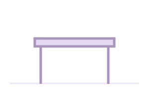
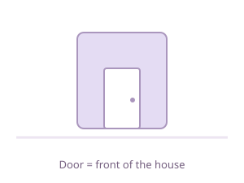
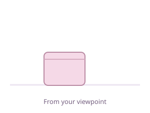
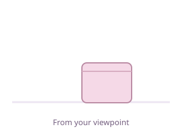
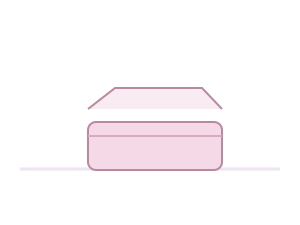
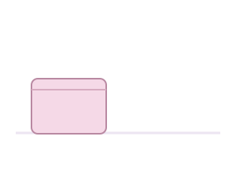
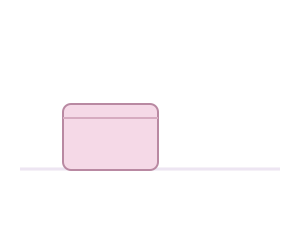
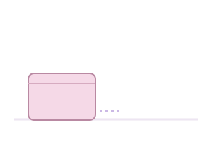
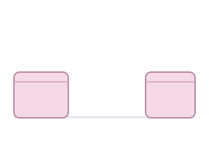

上
on / above

箱の 上に 猫が います。
There is a cat on the box.
SAKURA JAPANESE · N5
Find out what is there and say where people and things are. Open the dedicated grammar page below.
Open the dedicated grammar page
Lesson 10 focus: 〜に〜があります／います · 〜は〜にあります／います
上・下・前・後ろ・右・左…
The purple cat is the thing being located. Use noun + の + location word + に for its location. The house drawings show a door so that the front and back are clear.
on / above
箱の 上に 猫が います。
There is a cat on the box.
under / below

机の 下に 猫が います。
There is a cat under the desk.
in front of

家の 前に 猫が います。
There is a cat in front of the house.
behind

家の 後ろに 猫が います。
There is a cat behind the house.
to the right of

箱の 右に 猫が います。
There is a cat to the right of the box.
to the left of

箱の 左に 猫が います。
There is a cat to the left of the box.
inside

箱の 中に 猫が います。
There is a cat inside the box.
outside

箱の 外に 猫が います。
There is a cat outside the box.
next to

箱の 隣に 猫が います。
There is a cat next to the box.
near

箱の 近くに 猫が います。
There is a cat near the box.
between

箱と 箱の 間に 猫が います。
There is a cat between the boxes.
Right / left: these pictures use your viewpoint as the viewer. If someone specifies a person’s right / left, use that person’s viewpoint instead.
In front / behind: a house has an identifiable front, shown by its door. For objects without a clear front, the speaker’s viewpoint and context can determine the reference.
Next to / near: 隣 means an immediately neighbouring position; 近く covers the nearby area more broadly. They overlap in some scenes, but “near” does not require being directly next to something.
On / above: 上 can cover both. The example cat is sitting on the box; contact is clear from the picture.
Between: use AとBの間, not AのBの間.
や・など / に
Choose what you'd like to practice!
Start with flashcards, then test your memory with a game!
Practice particles for places and actions.
See how well you know the location words.
Other resources